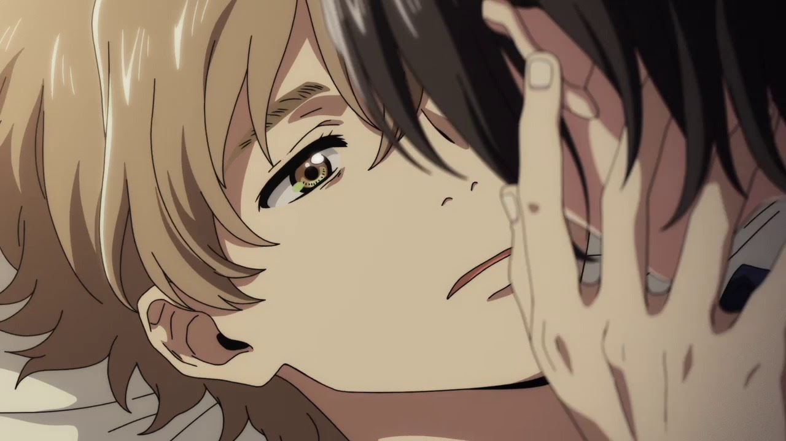

☆Gênero: Romance gay/ Drama/ Animação
☆lançamento: 05/09/2020
☆diretor(a): Akiyo Ohashi
☆Studio: Studio Hibari
☆classificação indicativa: +14
☆Duração: 59mn
avaliação:★★★☆☆(3,5)
Sinopse
Após se assumir para os pais, o aspirante a escritor Hashimoto Shun não tem ninguém a quem se voltar, até conhecer o estudante Chibana Mio na praia. Os dois se dão bem imediatamente — pouco antes do Mio ter que partir para a ilha principal. Agora, três anos depois, o Mio retorna com uma confissão. Mas depois de todo esse tempo, o Shun sentirá o mesmo que ele?